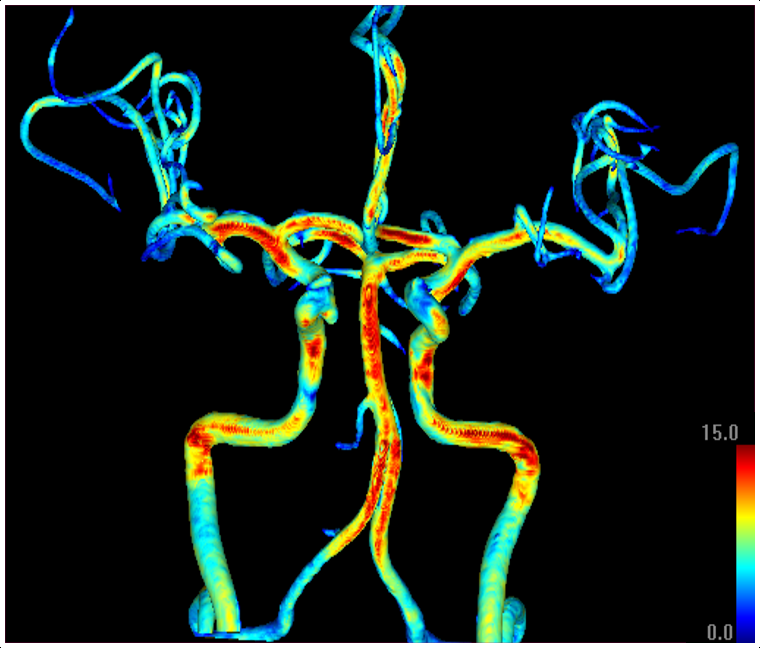
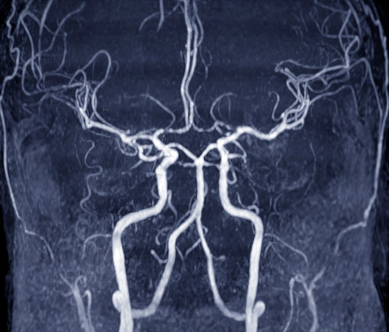
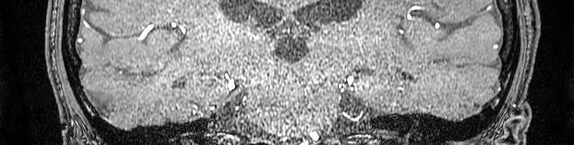
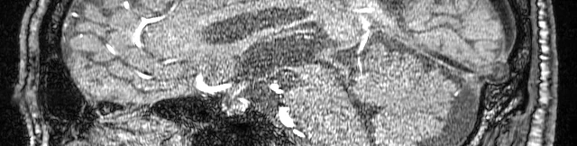
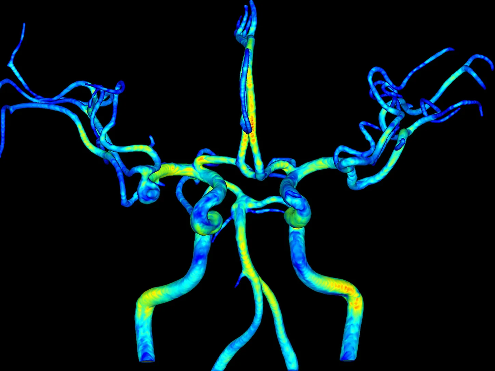

USA
FDA 510(k) Cleared
K240385
- 제품명 · Device
- VINT
TOF-MRA 기반 뇌혈관질환 위험 마커
뇌졸중 위험신호,뇌혈관의 흐름에서새로운 단서를 찾다.
3D 컬러 MRA와 SIG 정량 분석으로 뇌혈관의 혈류역학적 특성을 시각화하고, 뇌혈관 건강을 새롭게 이해하는 정보를 제공합니다.
FDA 510(k) Cleared · K240385 — 식약처 의료기기 인증 제인 23-4077호
NeuFlow는 TOF-MRA 영상에서 뇌혈관의 구조와 혈류 관련 특성을 분석하는 의료기기 소프트웨어입니다. 기존 영상에 담긴 정보를 3차원 혈관 영상과 SIG 정량정보로 제시해, 의료진이 뇌졸중 위험을 살펴보도록 돕습니다.
NeuFlow는 TOF-MRA 영상의 혈관 경계 부근에서 나타나는 신호(SIG/Signal Intensity Gradient) 변화를 분석해 혈관별 정량정보를 얻습니다. 혈액이 혈관벽을 따라 흐를 때 작용하는 힘을 혈관벽전단응력이라고 합니다. SIG는 이와 관련된 혈류역학적 특성을 이해하는 대리지표로 연구되어 왔습니다.
TOF-MRA 흑/백 이미지에서 산출되는 SIG 정보가 나오기 전에는 뇌혈관의 상태를 정량적 수치로 분석하기 어려웠습니다. 이제는 뇌졸중 위험신호를 해석하여 발병 위험에 대해 가능성을 분석합니다.


실제 결과물 한 쌍 (같은 구도) · 현 홈페이지 자료
K240385
NeuFlow(제인 23-4077호)
VINT (NeuFlow) is a medical software designed for viewing, post-processing, and quantitative evaluation of cerebrovascular MRI data in DICOM format. It enables visualization and quantitative analysis of cerebral blood flow characteristics, including Signal Intensity Gradient (SIG), through images, graphs, and numerical data. VINT is intended for adults aged 22 years or older who are eligible to undergo MR angiography (MRA).
REPORT보고서 기능
3차원 컬러 영상을 통해 뇌혈관의 구조와 형태를 직관적으로 확인합니다. 뇌혈관의 위치와 특징을 살펴보고, 혈류 특성을 이해하기 위한 3D 정보를 제공합니다.

SIG 정량 분석으로 혈관별 혈류역학적 특성을 수치와 컬러로 시각화합니다. 혈관의 형태뿐 아니라 혈류 관련 정보를 함께 살펴볼 수 있습니다.
SIG 정량정보를 활용해 뇌졸중과 연관될 수 있는 혈류역학적 특성을 살펴보고, 위험신호를 이해하기 위한 추가적인 분석 정보를 제공합니다.
뇌혈관 분석 결과를 증상, 병력, 혈압, 혈당 등 개인별 맞춤 위험요인을 함께 검토하여 뇌혈관 상태를 종합적으로 이해하도록 지원합니다.
PRODUCT제품 기능
3D 컬러 영상과 SIG 정량 데이터를 통해 뇌혈관 구조와 혈류역학적 특성을 분석하고, 뇌혈관 위험신호를 이해하기 위한 추가 정보를 제공합니다.
기존 병원 PACS 시스템과의 연동을 통해 뇌혈관 영상 분석 및 결과 확인을 지원하고, 의료진의 효율적인 검사 및 진료 환경을 제공합니다.
2D 슬라이스와 3D 컬러 혈관 영상을 함께 확인하여 관심 혈관의 위치와 형태를 직관적으로 파악하고, 뇌혈관 상태를 보다 상세하게 살펴볼 수 있습니다.
SIG(Signal Intensity Gradient) 기반 정량 분석으로 혈류역학적 특성을 수치화하고, 뇌졸중과 관련된 혈류 특성을 살펴보기 위한 추가 분석 정보를 제공합니다.
뇌혈관 구조와 SIG 정량 분석 결과를 리포트로 제공하여, 의료진이 뇌졸중 관련 위험요인과 함께 뇌혈관 상태를 종합적으로 검토할 수 있도록 지원합니다.
혈관 분석 결과에 대한 이해를 높이고 뇌혈관 건강 관리에 활용할 수 있도록 지원합니다.
STEP — 01 / 03
기존 TOF-MRA 영상을 활용해 뇌혈관 구조와 혈류역학적 특성 분석을 준비합니다.
3D 컬러 영상으로 뇌혈관을 시각화하고, SIG 정량 분석으로 혈류역학적 특성을 수치화합니다.
SIG 분석 결과를 보고서로 확인하고, 의료진이 뇌졸중 관련 위험요인과 함께 검토합니다.
 AXIAL · 축상
AXIAL · 축상
CORONAL · 관상
SAGITTAL · 시상

SIG 정량 분석으로 뇌졸중과 관련된 혈류역학적 특성을 살펴봅니다. 분석 결과는 뇌혈관 위험신호를 이해하기 위한 추가 정보로 활용되며, 의료진이 환자의 상태와 다른 검사 결과를 함께 고려하여 종합적으로 판단할 수 있도록 지원합니다.
EVIDENCE임상 연구
의료진에게는뇌졸중 관련 혈류역학적 단서를 추가로 살펴보고, 환자에게 보다 구체적으로 설명할 수 있는 분석 정보
3D 컬러 영상과 SIG 정량정보로 뇌혈관의 구조와 혈류역학적 특성을 함께 살펴봅니다. 뇌졸중 관련 위험요인과 다른 검사 결과를 종합적으로 검토하는 데 참고할 수 있습니다.
뇌혈관 영상과 SIG 정량 분석 결과를 활용해 혈관의 위치, 형태, 혈류 특성을 환자에게 직관적으로 설명하고, 뇌혈관 건강 상태에 대한 구체적인 상담을 지원합니다.
환자에게는자신의 뇌혈관 구조와 혈류 특성을 이해하고, 뇌혈관 건강에 대해 의료진과 상담할 수 있는 정보
3D 컬러 영상과 SIG 분석 결과로 자신의 뇌혈관 구조와 혈류 특성을 보다 쉽게 확인합니다. 뇌졸중 관련 위험요인과 뇌혈관 건강 상태에 대해 의료진의 설명을 들을 수 있습니다.
뇌혈관 분석 보고서를 바탕으로 검사 결과를 이해하고, 증상·병력·혈압 등 개인별 위험요인과 함께 뇌혈관 건강 상태를 의료진과 상담하는 데 활용할 수 있습니다.
“이건 MRA의 PET을 보는 것 같습니다. 결과로 보는 즉시 확인이 가능하고 확신이 됩니다.”
NeuFlow는 분석에 적합한 기존 TOF-MRA 영상을 활용하는 방식입니다. 실제 분석 가능 여부는 촬영 조건과 영상 품질, 의료기관의 운영 방식에 따라 확인이 필요합니다.
NeuFlow는 SIG 기반 정량정보와 뇌졸중 위험신호의 해석을 하나의 보고서로 담아 제공합니다. 분석 수치와 그 임상적 의미를 함께 살펴보고, 참고할 수 있습니다.
보고서는 관련 정보를 검토하고 설명하는 데 활용하는 자료입니다. 개인의 상태는 의료진이 증상, 병력, 위험요인과 다른 검사 결과를 함께 고려해 판단합니다.
기존 MRA가 주로 뇌혈관의 구조와 형태를 확인하는 데 활용된다면, NeuFlow는 3D 컬러 시각화와 SIG 정량 분석을 통해 혈류역학적 특성을 추가로 살펴볼 수 있도록 지원합니다.
SIG(Signal Intensity Gradient)는 TOF-MRA 영상에서 혈관벽 주변의 신호강도 변화율을 계산한 지표입니다. 혈관벽 전단응력(WSS)과 관련된 혈류역학적 특성을 간접적으로 평가하여, 뇌혈관의 상태를 이해하기 위한 정량정보를 제공합니다.
기존 MRA에서 구조적 이상이 확인되지 않았더라도 혈류역학적 특성을 추가로 살펴볼 수 있습니다. 다만 NeuFlow 분석의 필요성과 결과의 임상적 의미는 의료진이 판단합니다.
3D 컬러 영상과 SIG 정량 분석 결과를 통해 뇌혈관의 구조와 혈류 특성을 확인합니다. 의료진은 이를 환자 상담과 뇌혈관 상태의 종합적인 검토에 참고할 수 있습니다.